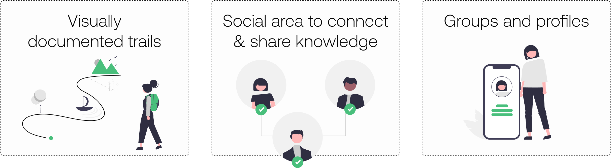

Treinpic is designed as a combination of hiking and social app, heavily based on geotagged photos.
It is a visual guide and a library for hikers as well as a place to connect and share knowledge.
My role
Solo designer: from Research and Ideation to Wireframing and Prototyping, Designing the UI and continuously Testing and Iterating.
Duration
2 weeks / May 2021
Case study
Read the full case study in Medium
The problem
This project was born from all the comments I gathered from hiking beginners. Complaints about the difficulty of reading maps outside urban areas. The subjectivity of route levels. And the frustration when feeling that the views and photos were not worth the effort of the hike.
There are already many hiking apps in the market, so I was curious to understand why people were having these problems. With all this, I defined my problem statement:
“Hiking beginners need to feel in control in Nature, discover routes they like and people that motivate them to keep hiking.”
The MVP is the result of the research’s data and user journey study. I defined three main areas of focus:
UX challenges
The major UX challenge in this project was to introduce a social aspect within a hiking app, which naturally connects with the trail’s geotagged photos. Design how these two parts interact, how users can navigate from a social post to starting a route. Define the meaning and interactions of the social area so it doesn’t lose its focus on sharing knowledge and connecting hikers.
The business strategy was also a challenge. The main user of the app is a hiking beginner who is not interested in having to pay anything at the moment, but instead finding out what the value is first. I had to decide which free features would be enough to give a taste of the app and generate engagement. And also which others have a bigger value to be available only for Premium users.

UX solutions
I designed the home screen “Explore” as a classic hiking app screen, with suggestions of routes based on the user’s preferences. The “Community” screen, is where the user interacts with other hikers. They can follow people and see posts with photos divided in four categories: Routes, Spots, Places and Hikers. Higher rated posts will appear first along with posts from the people the user follows. There is a filter with selectable preferences and the option to just see routes or posts from the people in the user’s network.
The monetization of this app is a Premium subscription that allows users to publish posts and routes, to DM other hikers through the app and to access and creates groups. The app can be used without registration to see posts and routes, but only when users do register, for free, they can follow routes, save items and record new routes for themselves.
As next steps I proposed the creation of hiking groups; and a variation of that, which is publishing route events that people can join. I also proposed a “Wise hiker” badge that will allow expert hikers to organize and guide difficult or special routes for a price.
UI challenges
Since geotagged photos were such an important part, I paid special attention and spent some time on its design, trying to display them seamlessly integrated in the app to accompany and help the user visually.
Performing Usability Testing highlighted some problems such as small texts that users had trouble to read and cards too packed with information. There was also a potential problem with the route’s timer button play/pause/stop, because the instructions added below them were not very clear and could lead to misunderstandings.
UI solutions
The icons and photos were designed so that all could be translated from the trail screen to the live route for consistency. On reflection, I found in the design a reminiscence of layout and presentation designs from my Architecture days.
I iterated some cards designs in the “Community” categories, keeping the cards with higher load of information in a horizontal format and others that focus on photos in a vertical format.
The route’s timer button play/pause/stop was replaced by two buttons, so at any moment the user could stop or pause the timer by just tapping on them.

Prototype
Feel free to interact with the Figma Prototype here